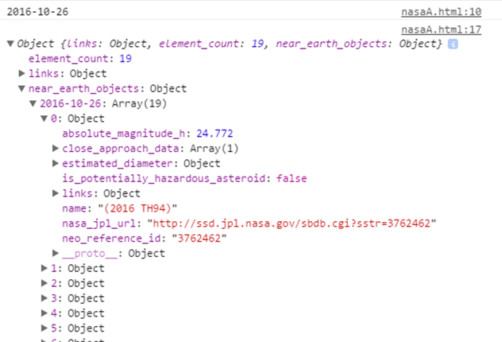

Now, that we understand how to make asynchronous GET requests and deal with data sent back from the NASA server, let's do something a little more exciting. Let's make a GET request in order to obtain data about near-earth asteroids and develop some functions that can help us make use of that data. NeoWs is part of NASA's API. It stands for Near Earth Object Web Service. This service allows us to make a GET request and retrieve information about asteroids that are near earth on specific dates. We want to allow a user to provide a date via a form, press a button in order to implement the request, and see some information about asteroids that were close to earth that day. Our GET request is going to look a little bit different this time.
If you look at the HTML above, you can see that we have a form where the user can enter a date. The date should be entered in the format "yyyy-mm-dd". The text in the date field is then assigned to the date variable in our JavaScript code. Then, we combine our string variables to create a URL based on the instructions specified on NASA's NeoWs Page. Note: You might notice that the API tells us to specify a start and end date, which allows us to get back information about near earth objects that span more than a single day. We are using a single date for both the start and end date in order to keep things simple. The data that you get back from this request is actually quite complex. As is shown from the console image below, the response contains multiple layers of objects and properties, and the objects that we are interested in are within the array called '2016-10-20' (the date the user entered) within the 'near_earth_objects' object.
Right now, we just want the details about asteroids that came close to earth on that day. It might be useful to know what their names were and how close they came to the earth. The response provides all of this information for us, so let's develop some functions that will allow us to iterate through an array, and get the information that we want.
NEXT